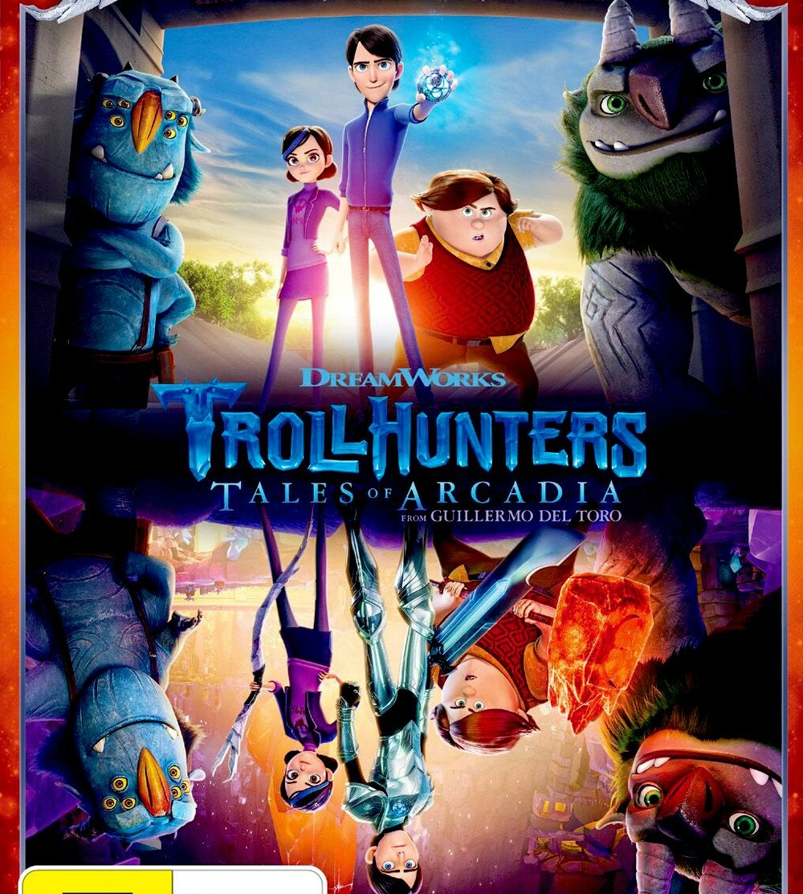
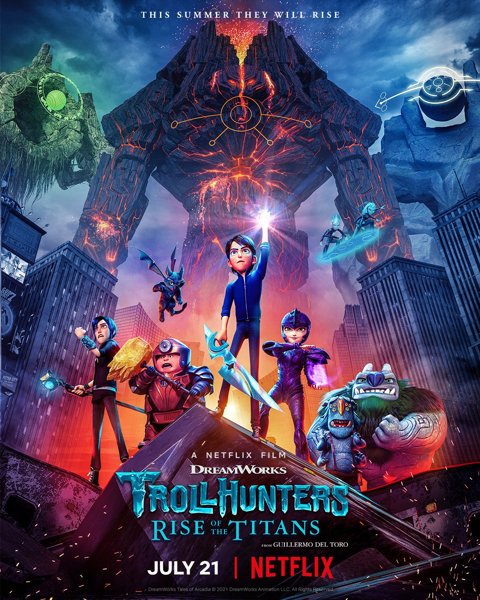

Tales of Arcadia
Trollhunters
It follows the story of James "Jim" Lake Jr., a teenage boy who finds a mysterious amulet and stumbles across a secret realm inhabited by trolls and other magical creatures. Soon afterward, he and his friends are charged with protecting the world from the dangerous monsters that lurk in the shadows of their small suburban town.
3 Below
Two royal extraterrestrial siblings, Crown Princess Aja and Crown Prince Krel of House Tarron, their doglike pet named Luug, and their bodyguard, Varvatos Vex, escape from their home planet of Akiridion-5 after a coup and crash-land on Earth, specifically in the city of Arcadia Oaks, California. There, the aliens adjust to human culture and try to fix their spaceship (as well as to restore their nearly-dead parents King Fialkov and Queen Coranda) to return and take back Akiridion-5, which is being taken over by an evil dictator known as General Val Morando, who has already sent out a team of intergalactic bounty hunters, called the Zeron Brotherhood, to find and catch the alien prince and princess

Wizards
The first and only limited series in the Tales of Arcadia franchise, it is a fantasy time travel saga that explores the world's mythological origins and introduces a new protagonist in Hisirdoux "Douxie" Casperan, a former apprentice to the legendary Merlin who was forgotten for centuries and is now eager to prove his worth as a sorcerer in the eyes of his old master.

Rise of the Titans
Following a year after the events of Wizards, the Guardians of Arcadia reunite for the final time as they battle the nefarious Arcane Order, who have reawakened the primordial Titans.
Made with 💙 by Jade Rowe